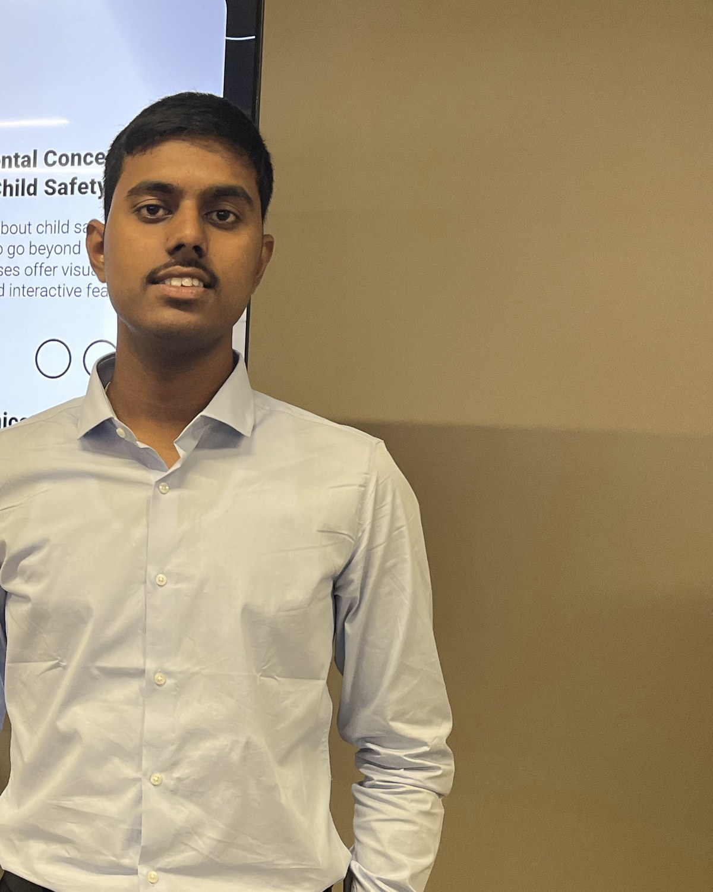

I'm a final-year CSE student and AI/ML engineer based in Pune,
working mostly in Python and FastAPI. I build agents and retrieval
pipelines on Neo4j knowledge graphs and Milvus vector search, with
LangGraph holding the orchestration together.
What I enjoy is the unglamorous infrastructure — the part that turns
a slick demo into something grounded, reproducible, and ready to put
in front of real users.

Experience
Where I’ve worked.
Python AI/ML Intern
Toshal Infotech
Jan 2026 — Aug 2026Surat, India
Architected a Neo4j knowledge graph for multi-hop reasoning a flat vector store can't do, structuring AI concepts and their relationships.
Built the Milvus RAG layer that keeps answers grounded in real source material and cuts hallucinations on out-of-distribution questions.
Developed Skillonomy — an AI tutor that teaches business users AI concepts through conversation, then auto-generates hands-on labs at their level.
Built an Intern Companion Agent in Copilot Studio and an attendance portal in Power Apps, then wired the two into a single workflow for the intern programme.
Provided UI design support across the team's Power Apps projects for cleaner, more usable interfaces.
Copilot Studio · Power Apps · Python · Git
Web Developer Intern
Agarwal Creations
Jun 2024 — Aug 2024Pune, India
Rebuilt the company's WordPress storefront end to end — cart, wishlist, and inventory across multiple extensions.
Laid the SEO groundwork that grew organic traffic from ~130 to 2,500 visitors a month over a single summer.